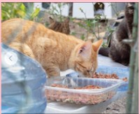

Buscamos personas comprometidas y con energía: ¡eres parte esencial del funcionamiento de nuestro equipo!
Necesitamos personas con ganas de ayudar a los animales: alimentación de los gatos, mantenimiento de las colonias felinas, colaboración para el método CER.
Compromisos del voluntariado

- Alimentar al menos una vez por semana la colonia asignada (turnos coordinados).
- Revisar agua, limpiar comederos y dejar el punto en buenas condiciones tras cada visita.
- Mucha motivación para ayudar en la organización de paradas y eventos solidarios (montaje, atención y recogida).
- Mucha motivación para mejorar la calidad de vida de los gatos callejeros: avisos, seguimiento y apoyo en acciones CER con formación.
- Comunicación y trabajo en equipo para reportar incidencias y necesidades de la colonia.
Compromiso y motivación
Ser voluntario/a requiere sensibilidad, responsabilidad y compromiso. Tu papel es clave para el bienestar de los animales y para que su estancia sea amena y feliz.